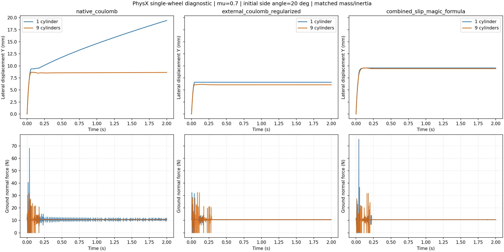

Completed: one smooth cylinder / nine uniform axial smooth cylinders, each with native Coulomb, external regularized Coulomb and nonlinear combined-slip tire forces. μ=0.7, 400 Hz, initial hub side angle20°, speed1 m/s,2 seconds. These are single-wheel axle fixtures; TRON1 policy transfer and model-specific training have not run.
Each representation has one rigid body, equal0.127 m radius,0.05 m total width,1.08 kg mass, COM and explicitly matched principal inertia. Rotation about world X/Z is locked in this fixture; translation and wheel spin remain free. The original rendering cylinder has its collision APIs removed. Runtime shape counts are exactly1/9, respectively.

| Force law | Slices | Peak normal force(N) | Samples above5N | Max patches | XY balance peak residual(N) |
|---|---|---|---|---|---|
| native_coulomb | 1 | 68.146 | 98.38% | 4 | 0.000187 |
| native_coulomb | 9 | 31.791 | 98.00% | 20 | 0.000658 |
| external_coulomb_regularized | 1 | 32.425 | 99.25% | 4 | 5.98e-05 |
| external_coulomb_regularized | 9 | 32.528 | 97.63% | 19 | 7.29e-05 |
| combined_slip_magic_formula | 1 | 75.423 | 98.50% | 4 | 6.19e-05 |
| combined_slip_magic_formula | 9 | 31.841 | 97.88% | 19 | 4.57e-05 |
In these six traces, slicing reduces the largest normal-force peaks for native/nonlinear arms, but does not consistently improve support continuity. It increases the number of contact patches. This is one initial condition per arm, not a general stability finding or a sustained high-speed drift.
The measured native normal-force vector has nonzero XY components, despite the authored flat triangle floor. Horizontal impulse balance includes that whole normal vector, summed native friction patches and the applied external wrench. Its peak residual is below0.001 N in every case. XY force must not all be labeled tire friction.
External arms disable native tangential friction, retain native normal contact, and use the preceding physical sample's load/contact point. The nonlinear curve must therefore be compared first with the external Coulomb control with identical coupling. It is a dissipative combined-slip sensitivity law, without identified real-tire parameters or static adhesion; global-XY tire force uses global-Z load. Contact positions and force readings aggregate patches, so pointwise friction cones and individual slice loads are not identified.
Four earlier setup revisions are retained under evidence. In the final v4 same-source probes, the convex-approximation setting fails the support preflight, while smooth mode passes. This is an installed-configuration compatibility observation. Cooked geometry type has not been independently identified; it is not evidence that all PhysX convex wheels fail. The three proposed convex force-law arms have no usable task result.
USD cylinders and convex approximations are different representations; the installed setting and source are recorded. See NVIDIA collider documentation. Explicit mass, COM and inertia follow USD physics mass properties. Uniform rigid slicing introduces no tire deformation. Authored contact/rest offsets remain automatic; effective cooked offsets were not read back, so these data do not isolate only manifold changes. Match explicit offsets or verify their runtime values before the full-robot comparison.
Current controller comparison is frozen separately: O PPO, two engines and O CEM. Next: tilt/rolling and seam checks, then the declared frozen K actor across wheel-model arms at μ=0.7, followed by matched model-specific training. No new reward sweep or task-success claim is made here.
Measurements · Execution proofs · Read-only replay
python replay.py --repository /path/to/tron1-sliding-analysis
Replay verifies all published bytes, recomputes the six native metrics, all external tire wrenches and horizontal impulse balance. It needs NumPy and repository sources, without Isaac, actors, physical assets or native compilation. Source archives are pure code/configuration; restore only into a fresh checkout.